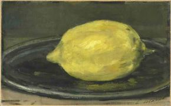

Myra Schneider
Le Citron
after Manet
Day afer day I contemplate this lemon,
the small weightiness of its rounded body
bedded on a plate whose mood is olive, why
the fruit seems pliable — not hard, not hostile.
Its landscape offers many yellows — joyful
and mustard, hillsides of forest green.
I imagine touching the points at each end,
feeling their vulnerability. How
the plate’s circularity is underlined
by its silvered rim. I decide it’s trapping
light from a full moon, transform the lemon
into a plump sun illuminating
the dark room. Suddenly I can hardly bear
the huge isolation of its splendour.

The Half Lemon
Look, a half lemon glistening in the larder.
Its scent is sharp as a knife’s nick, as the frost
the sun is stripping from the grass, and its rim
of pith is already hardening. I stare
at the circle of finely veined segments, a hymn
to symmetry, and conjure up the ghost
of a pistil in the central hole where petals
clung in their whiteness months ago. Despite
all our learning flowering and fruiting are still
mysteries. I don’t want them unravelled —
so often we use knowledge to breed blight.
I touch the woody seeds deeply lodged
in the lemon’s flesh, wanting to believe
flower and fruit, colour and zest will survive.
Myra Schneider’s tenth collection of poetry, Circling the Core, has just been published by Enitharmon. Other recent collections are Multiplying The Moon (2004) and Insisting on Yellow (2000), also Enitharmon. Writing My Way Through Cancer (Jessica Kingsley 2003) is a fleshed-out diary with poems. She is co-writing Writing Your Self due 2009 (Continuum International). She has written fiction for children, co-edited four anthologies of poetry by contemporary women poets, is widely published in journals including Quadrant (Australia). She was shortlisted for a Forward Prize (2007). She is a tutor for The Poetry School in London, UK.
|